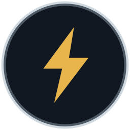

Open Weather GitHubFree, open source, and built to work even when the internet does not. No cloud. No account. No subscription.
Most weather apps lock you into a service. Open Weather is the other path: self-reliance. Build a station from parts you can buy and print, run the software on your own computer, and keep a live picture of the weather right where you are.
The Command Center is the desktop app for Windows, macOS, and Linux. Connect a home station when you have one. Until then, the map and outlook still work from public sources.
| You have… | Open Weather can… |
|---|---|
| A station, no internet | Show live local readings and keep history on your computer |
| Internet, no station | Show radar, satellite, alerts, and the 10-day outlook |
| Both | Combine your backyard numbers with the national picture |
We do not upload your location history, station data, or personal information. Sharing, when it arrives, will stay anonymous.
The long-term goal is a station anyone can make:
Hardware and print files are still coming back into this project. Outdoor print notes are in Issue #1 and the filament spreadsheet.
On the roadmap is a network of home stations that can fill gaps for neighbors and for the outlook. Stations will be able to share readings over the internet, LoRa mesh, and similar links. No names, no accounts, no household data — only weather. That network is not built yet. The app is designed so it never has to depend on it.